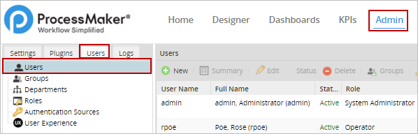
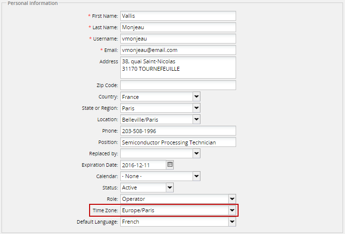
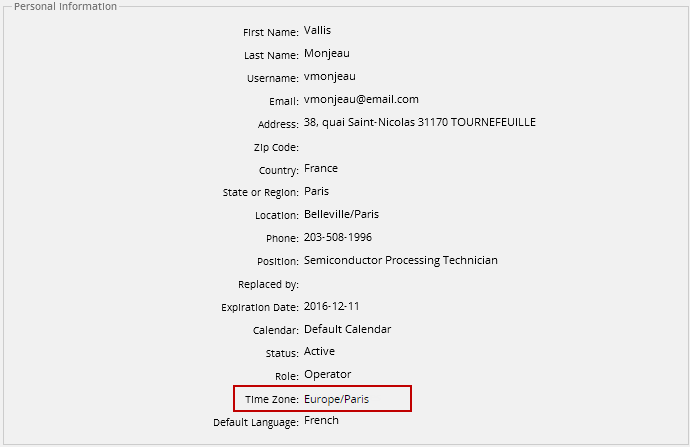
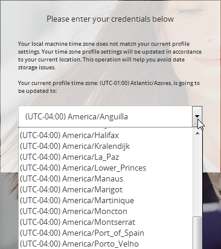
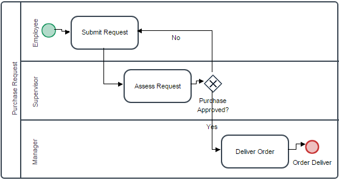
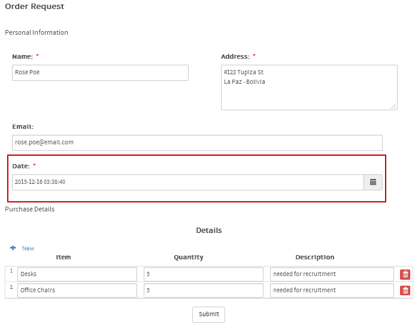
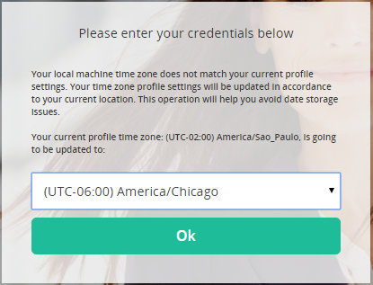
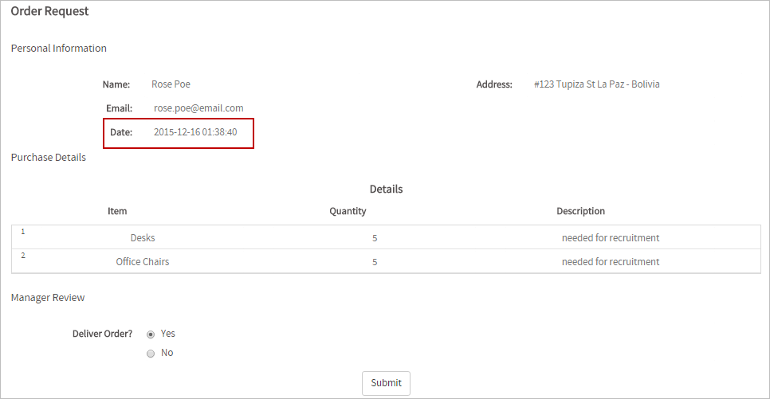

Available Versions: As of ProcessMaker 3.0.1.7.
Overview
If having users spread across different time zones who will work in the same cases and processes in ProcessMaker, it is now possible to manage those users' profiles to show date times in their own time zones. This feature is available in the Enterprise edition of ProcessMaker and it makes sure that all date time fields are processed to be stored in Universal Time Code (UTC) standard in the ProcessMaker wf_<workspaceName> database and when retrieved, the engine processes date times so they are shown according to the time zone where users are located.
This feature also automatizes the configuration of the time zone of the logged user to ProcessMaker by verifying that the computer time zone where the user is working is the same as the time zone configured in the user's profile. This verification is made right after the login, taking into account that is the time zone is different, the user select his or her new time zone and ProcessMaker saves it to start working with this new time zone.
Note 1: This feature is only available for clean installations of ProcessMaker 3.0.1.7 or new workspaces. The already existing installations maintain the normal management of times and dates.
Note 2: Take into consideration that Triggers and Cron Tasks use the Default Calendar configuration along with the Time Zone configuration. Therefore, if working with either of them in ProcessMaker 3.0.1.7 or 3.0.1.8, it is strongly recommended to set the "Default Calendar" configuration to 00:00 - 23:00 hours for all the days of the week in order to allow their executions without problems.

Licensing
The Multi Time Zone support is only included in the Enterprise Edition of ProcessMaker. Find the complete list of enterprise features at ProcessMaker Enterprise Edition v.3.0.
ProcessMaker Time Zone Functionality
Let's take an example to describe a current problem when users in different time zones have to work in the same cases. User "ana" works in Madrid - Spain, her Time Zone is (UTC +01:00 Europe/Madrid) and she has received a request from another user "ken" who is currently located in Tokyo - Japan whose time zone is (UTC +09:00 Asia/Tokyo). The request will be submitted at "8:00 PM" in Japan, but the time difference between Spain and Japan is of eight hours. So when the request is received by "ana" and she opens the case immediately it would be just "12:00 PM" in Spain. How can she work with a request that has a date and time she has not reached yet? This is a problem for most of the people and companies who have to work spread in different places around the world.
To solve this problem ProcessMaker offers the Multiple Time Zone feature that works with the ProcessMaker user profiles in which each user can be assigned a different time zone depending on the configuration of the computer from where they login to ProcessMaker.
This feature works with the date time fields managed by ProcessMaker:
- User Profiles
- DynaForms
- Triggers
- Report Tables
- Running Cases
- Dashboards
- Upgrade Scripts
- Command Line Scripts
- others
Take into account that this feature does not work with the cron files of ProcessMaker, because they work with the time zone configured in the env.ini file which is set in the Admin > Settings > System > Time Zone section of ProcessMaker. The cron files that work with the System's Time Zone are the following:
cron.phpmessageeventcron.phptimereventcron.php
The ProcessMaker Multiple Time Zone feature manages time zones based on the ISO 8601 standard. Date times from DynaForm date time fields, variables, parameters or/and other date time options in ProcessMaker will be sent in the yyyy-mm-dd hh:mm:ss ISO 8601 format. The ProcessMaker engine processes the date time in its core and converts this format so it is stored in UTC format in the wf_<workspaceName> database. When needed to retrieve this date time from a specific time zone, the date time retrieved from the database is the UTC and, again, the engine processes according to the Time Zone set in the profile of the user(s) who made the request and converts it to the yyyy-mm-dd hh:mm:ss format so users easily work with dates and time.
Going back to the previous example, with the Multiple Time Zone feature of ProcessMaker, when "ana" from Spain receives the request from "ken" from Japan, the request date will be converted to the date and time in Spain when "ken" submitted the request. With this, "ana" will receive the request date at 12:00 PM and will have the ability to know exactly how much time passed from the exact date and time when the request was sent.
With this feature, every user in the same workspace is assigned with the Time Zone where they will work. Nevertheless, ProcessMaker verifies every time the user logs, that the time zone of the computer from where the user is working is the same as the time zone configured in his or her profile. If it is different, after the user logged into ProcessMaker, the options to update the time zone are displayed so the user updates his or her profile and starts working with the time zone configured.
User Time Zone Settings
Admin users have the ability to set the Time Zone for each individual account in ProcessMaker via Admin > Users > Users

By default, every user is assigned with the same time zone as the ProcessMaker's time zone configured in the System.
The list of all users inside ProcessMaker will be displayed at the right. The configuration of the Time Zone must be done one user at the time. Select the user from the list and click on Edit.

The information of the user will be shown inside the form that opens. To set the Time Zone in which the user is working, go to the Time Zone field. Notice that this field is not available if it is not included in the license.

Select the Time Zone in which the user works from the dropdown of this field and save the configuration by clicking on the Save button at the bottom right-side of the screen.
Any operator user is able to see the time zone set by default in his or her profile by clicking on the user name at the top right side of the window, next to the Logout option.

The information of the user's account is shown, including the Time Zone set for the user:

Users with the PM_EDITPERSONALINFO role have the ability to edit the information shown in their profiles by clicking on the Edit button at the end of the page.
Login Settings
When users that work with this option have a time zone defined in their profiles, change their location and set a new time zone in their computers, after logging to ProcessMaker, the following window is shown:

The dropdown option list the UTC options where the user is located:

Multiple Time Zone Example
Let's work with a simple version of the "Purchase Request" process that has the following design:

In the "Submit Request" task, the "Employees" group has been assigned to send purchase requests. Employees assigned to this group are spread around the world and manage different time zones which are already set in their ProcessMaker's user accounts.
In the "Assess Request" task, the "Supervisors" group has been assigned to review the employees' requests sent in the first task. Supervisors are also spread around the world, but they don't necessarily work in the same areas as the employees whose work they supervise. They also manage different time zones which are already set in their ProcessMaker accounts.
In the last task, "Deliver Order", the "Managers" group has been assigned to make the final approval of the request. Managers are wide spread around they world so they hardly ever work in the same areas as employees. Their time zones have also been set already in their ProcessMaker user accounts.
For the example, employee "Rose Poe" who works in La Paz - Bolivia (UTC - 04:00) will start a case of the process to send her request. The form that she must fill includes the date and time when she sends the request:

Her supervisor, "Vallis Monjeau", receives her request, but he is currently working in Brasilia - Brazil (UTC - 03:00). The time difference between those countries is two hours. So, when he opens the case the following is shown:

The request time has been updated taking the time zone in Brasilia.
Supervisor "Vallis Monjeau" approves "Rose Poe"'s request and it is now sent to manager "Arleen Turner" whose time zone was configured to Brasilia, but she has moved to Chicago - United States (UTC -06:00 ), thus after she logs to ProcessMaker, she has to update her time zone:

After she updates the time zone, she opens the case and receives the following:

That's how the Multiple Time Zone works in ProcessMaker.